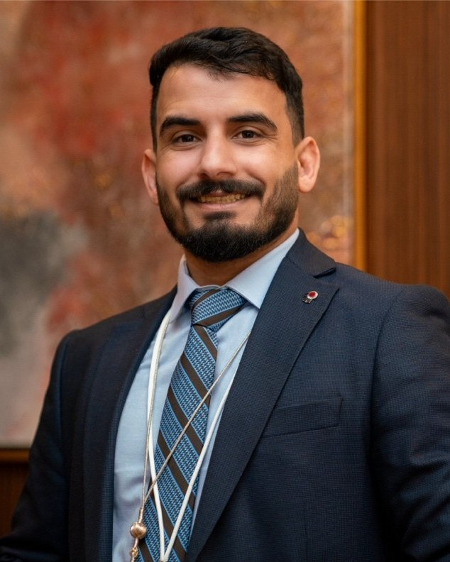

عثمان المشاقبةOthman Almashaqba
أبدأ من الناس، وأنتهي بأثر يُقاس.I start with people, and end with impact you can measure.
قائد تقنية في الرياض. منذ 2014 أعمل بين الأردن والإمارات والسعودية على استراتيجية التقنية وتحولات ERP وحوكمة تقنية المعلومات، والهدف واحد: أن يصير الاستثمار في التقنية قيمة يلمسها العمل.A technology leader in Riyadh. Since 2014 I have worked across Jordan, the UAE and Saudi Arabia on technology strategy, ERP transformation and IT governance, with one aim: technology investment that the business can feel.

التقنية تصبح أكثر قيمة حين يفهمها العمل، ويستفيد منها الناس.Technology creates more value when the business understands it and people benefit from it.
أساعد المؤسسات على تحويل استثمارها في التقنية إلى قيمة أعمال يمكن قياسها. أبني فرقًا تجمع ERP والبنية التحتية والتكاملات والبيانات والعمليات الرقمية، وأعمل مع الإدارة التنفيذية لتتوافق خطط التقنية وميزانياتها ومخاطرها مع أولويات العمل.I help organisations turn technology investment into business value they can measure. I build teams that bring together ERP, infrastructure, integrations, data and digital operations, and I work with executives so that technology roadmaps, budgets and risk line up with business priorities.
- منذSince
- 20142014
- بينAcross
- الأردن والإمارات والسعوديةJordan, the UAE and Saudi Arabia
- قدتLed
- أكثر من 10 تحولات ERP10+ ERP transformations
- مع OdooWith Odoo
- من الإصدار 8 إلى 19from version 8 to 19
لا أعدّ الأنظمة التي أطلقناها. أقيس ما تغيّر بعدها.I don’t count the systems we launched. I measure what changed after them.
أرقام من البرامج التي قدتها، قبل التقنية وبعدها.Figures from the programmes I led, before and after.
-
تكاليف تشغيل التقنيةTechnology operating costs
−15%
بالحوكمة والتحسين وإدارة الموردين، في مجموعة العمرانThrough governance, optimisation and vendor management at Alomran Group
-
أداء البنية التحتيةInfrastructure performance
+20%
بالترحيل إلى السحابة والأتمتة، في مجموعة العمرانThrough cloud migration and automation at Alomran Group
-
توقف الأنظمةSystem downtime
−30%
وقت أقل تكون فيه الأنظمة متوقفة عن العملLess time with business systems down
-
دقة ترحيل البياناتData migration accuracy
99.9%
999 من كل 1000 سجل، في ترحيلات بيانات مؤسسية معقدة مع No Errors IT Services999 of every 1,000 records, in complex enterprise data migrations with No Errors IT Services
كيف أفكّرHow I think
خمس أفكار أعود إليها في كل مشروع.Five ideas I come back to on every project.
المنهج كاملًاThe full approachكل مشروع تقني يبدأ من الناس الذين سيستخدمونه.
Every technology project starts with the people who will use it.
اثنا عشر عامًا بين ثلاث دولTwelve years across three countries
من الدعم التقني وتحليل البيانات، إلى كتابة أنظمة Odoo، ثم إدارة تقنية المعلومات وقيادة استراتيجيتها.From technical support and data analysis, to building Odoo systems, to running IT and leading its strategy.
القصة كاملةThe full story- 2014الأردنJordanاليونيسفUNICEF
الدعم التقني وتحليل البيانات لمشاريع اليونيسف.Technical support and data analysis for UNICEF projects.
- 2018الأردنJordanShahwanShahwan
تطوير وحدات Odoo من الإصدار 8 إلى 13.Building Odoo modules, versions 8 to 13.
- 2020دبيDubaiNo Errors IT ServicesNo Errors IT Services
إدارة تقنية المعلومات وفريقها وسياساتها وميزانياتها.Running IT, its team, policies and budgets.
- 2021الأردنJordanCellBay و Smart RockCellBay & Smart Rock
إدارة تقنية المعلومات، وتحول ERP على Odoo 13.Running IT, and an ERP transformation on Odoo 13.
- 2022السعوديةSaudi Arabiaمجموعة العمرانAlomran Group
استراتيجية التقنية، وتحول ERP، وحوكمة تقنية المعلومات.Technology strategy, ERP transformation and IT governance.
- 2025الرياضRiyadhMeela Investment CompanyMeela Investment Company
استراتيجية ERP في خدمة قرارات الاستثمار.ERP strategy in service of investment decisions.
من Odoo 8 إلى 19Odoo, from 8 to 19
أكثر من عشرة برامج تحول ERP في الأردن والإمارات والسعودية، من التجارة الإلكترونية إلى الأصول والاستثمار.More than ten ERP programmes in Jordan, the UAE and Saudi Arabia, from e-commerce to assets and investment.
كل الأعمالAll the workإصدارات OdooOdoo versions
Odoo 8–9
Shahwan GroupShahwan GroupالأردنJordan
أسس التحول: وحدات ERP مترابطة وأتمتة، على الإصدارين 8 و9.The foundations: connected ERP modules and automation, on versions 8 and 9.
علوم الحاسوب في الأساسComputer science at the core
بكالوريوس وماجستير في علوم الحاسوب، وثلاث أوراق بحثية قُدّمت للنشر في الأمن والصحة والعقار.A bachelor’s and a master’s in computer science, and three research papers submitted for publication in security, health and real estate.
المعرفةKnowledge-
الأمن والسجلات الموزّعةSecurity & distributed ledgers
أمن دورة الاختبارات الرقميةSecuring the digital exam lifecycle
مقدّمة للنشر فيSubmitted to Information Security Journal: A Global Perspective
-
الصحة والتوائم الرقميةHealth & digital twins
توائم رقمية لرعاية وقائيةDigital twins for preventive care
مقدّمة للنشر فيSubmitted to International Journal of Healthcare Management
-
الذكاء المكاني والعقارSpatial AI & real estate
تقييم عقاري قابل للتفسير بـ GeoAIExplainable GeoAI for property valuation
مقدّمة للنشر فيSubmitted to Applied Geomatics